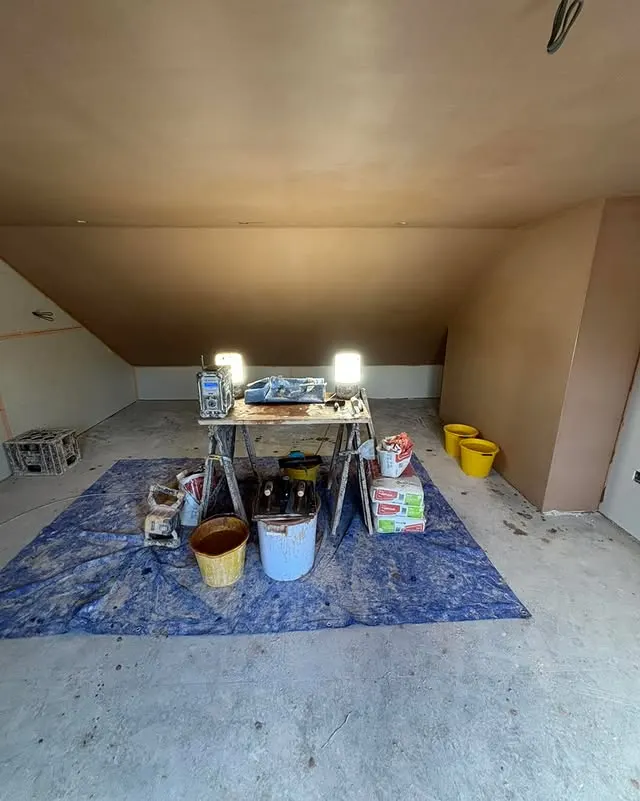
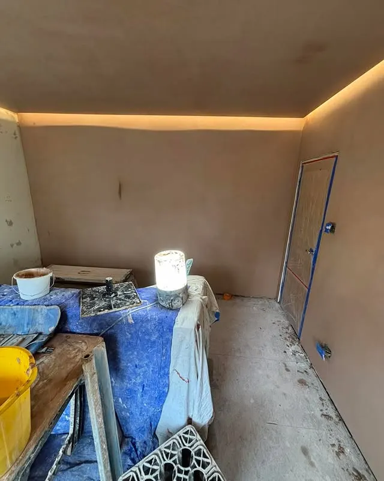
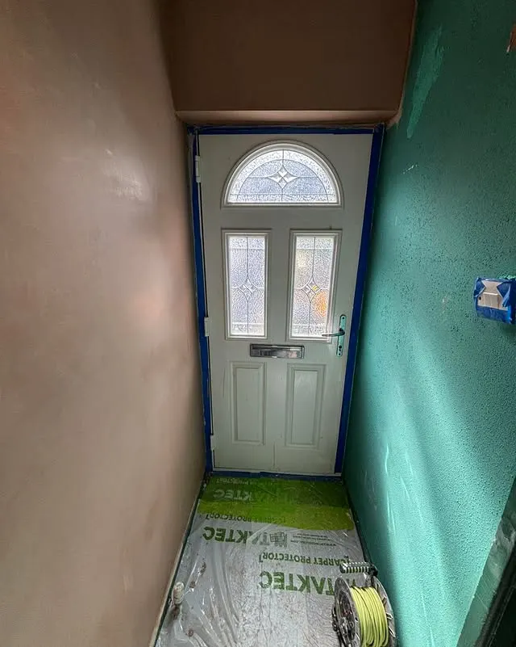
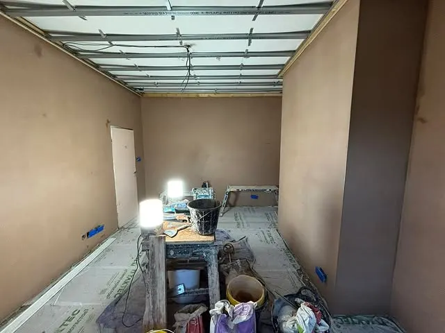
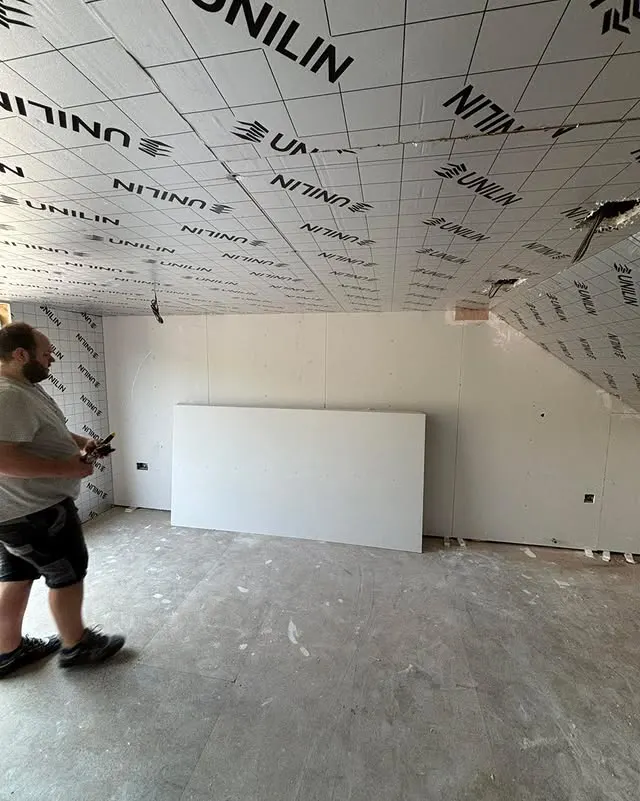
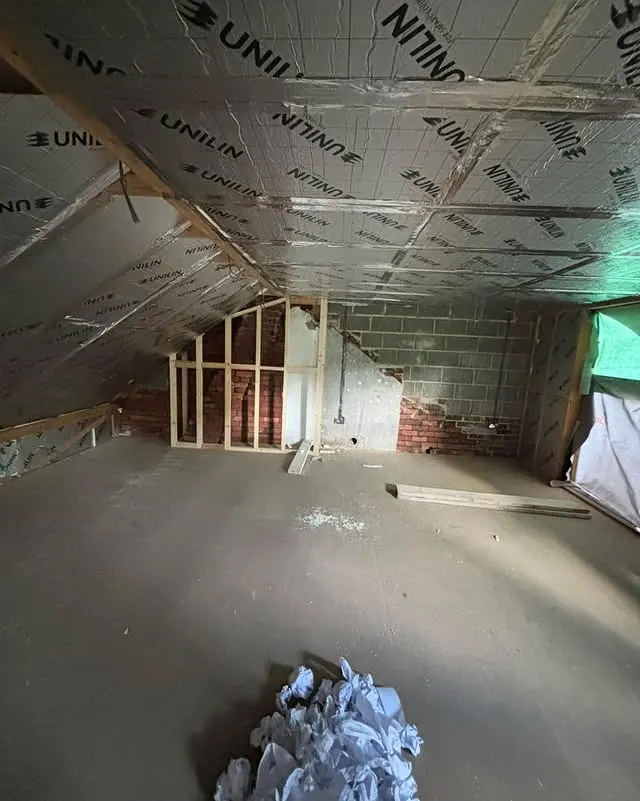

Mirfield, England · Family-run
Family-run plastering, over 15 years in the trade.
Cooper Brothers Plastering is a family-run business with over 15 years of experience in all aspects of plastering, now working on full house renovations.
Bedrooms, lounges, halls, stairs and landings — plastered out to perfection, and kept clean, as their own posts show.

What we do
Full-room plastering
Bedrooms, lounges and living spaces plastered from prep to smooth finish.
Renovation plastering
Plastering for full house renovations, working alongside builders through each stage.
Floating ceilings
Bedroom floating ceilings and feature ceiling work.
Halls, stairs & landings
Hall, stairs and landing plastering — kept clean, in the team’s own words.
Recent work
Photos from our own Instagram — real jobs, not stock photos.





Get a quote
Message Cooper Brothers Plastering on Instagram @cooperbrothersplastering to ask about a job. No phone number is published in the business bio, so none is shown here.